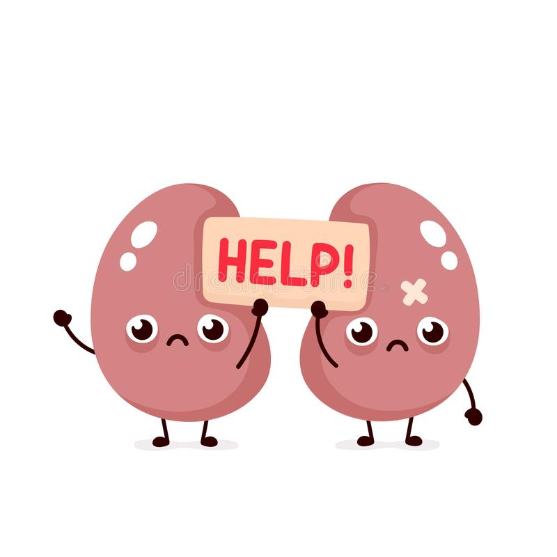

Coloque aqui o seu peso atual.

Beneficios de se tomar bastante agua!
- Auxilia o bom funcionamento dos rins
- Limpa o organismo
- Ajuda a não reter líquidos
- Regulador térmico
- Desintoxica o organismo
- Aumenta massa muscular
- Combate o envelhecimento
- Ajuda a emagrecer
- Contra a constipação
- Fundamental para a saúde

Males que a falta de agua faz para o nosso corpo
- Piora da memória e do raciocínio
- Envelhecimento da pele
- Mau halito
- Queda no desempenho escolar
- Dificuldade para perder peso
- Cansaço diario
- Dor de cabeça

Dados sobre calculo renal
- Doença que pode atingir até 15% da população mundial
- Aproximadamente, duas vezes mais comum nos homens do que nas mulheres.
- 5% dos cálculos renais podem estar associados a infecções urinárias
- Estima-se que 1 em cada 10 pessoas no Brasil sofra de cálculo renal.
- Mais comum entre adultos jovens, entre os 20 a 35 anos